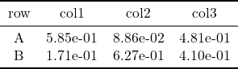
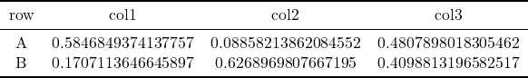
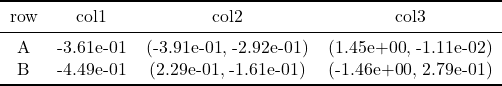

One-level rows and One-level columns
A = rand(2, 3)
print2tex(A, ["A", "B"], ["col1", "col2", "col3"], file = "ex0.tex")
tex2png("ex0.tex")"ex0.png"
A can also be matrix of strings
print2tex(string.(A), ["A", "B"], ["col1", "col2", "col3"], file = "ex00.tex")
tex2png("ex00.tex")"ex00.png"
handle missing values,
A = [1 2 missing; 3 4 5]
print2tex(A, ["A", "B"], ["col1", "col2", "col3"], file = "ex0m.tex")
tex2png("ex0m.tex")"ex0m.png"Tuple in a cell
For example, it might be the confidence interval.
a = randn(2)
b = [randn(2) for i = 1:2, j = 1:2]
A = hcat(a, b)
print2tex(A, ["A", "B"], ["col1", "col2", "col3"], file = "ex01.tex")
tex2png("ex01.tex")"ex01.png"